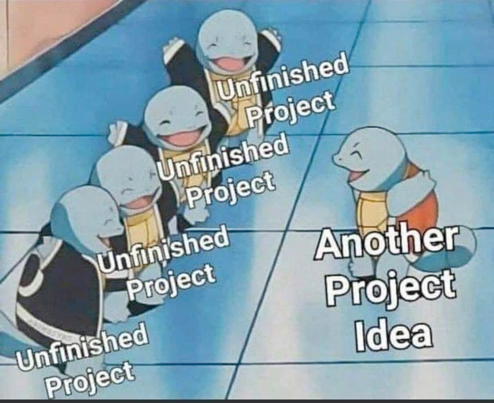
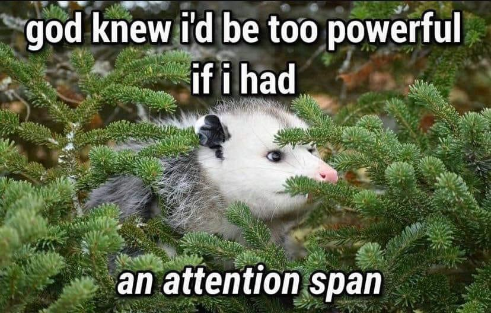
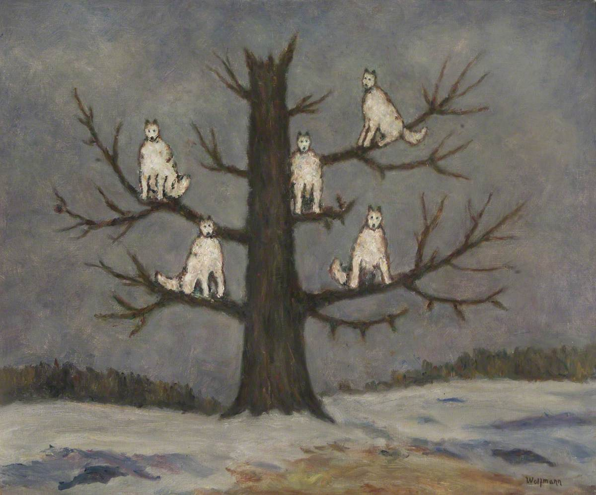
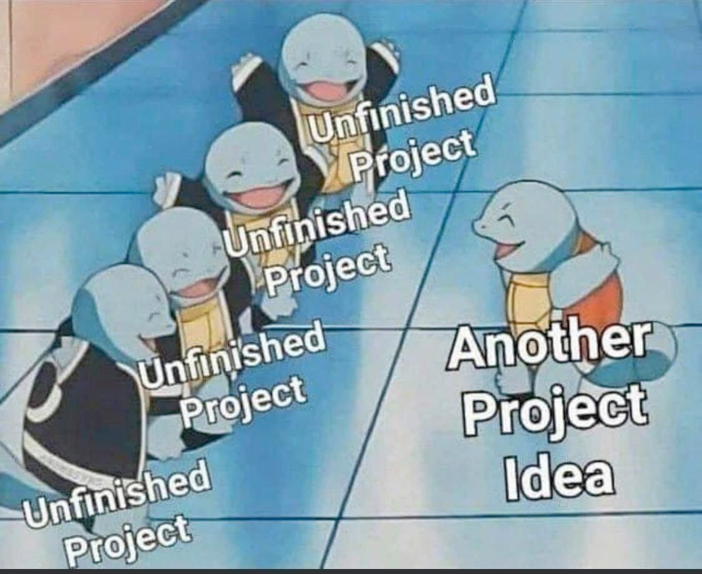
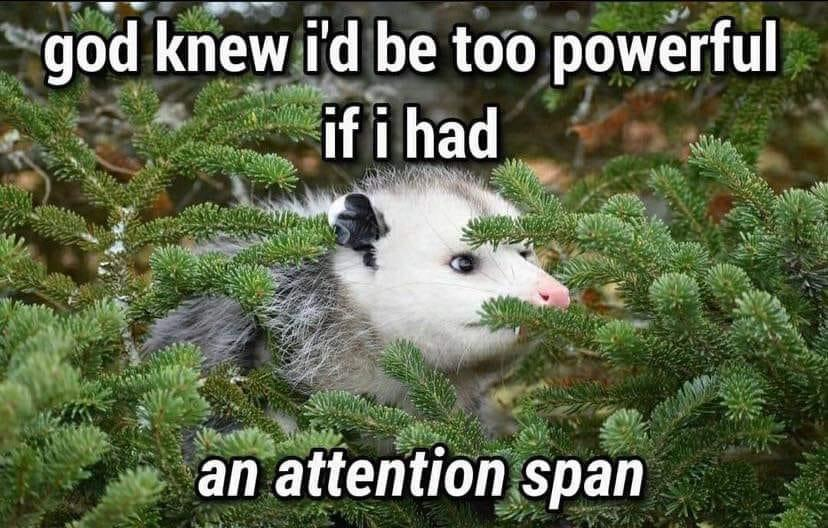
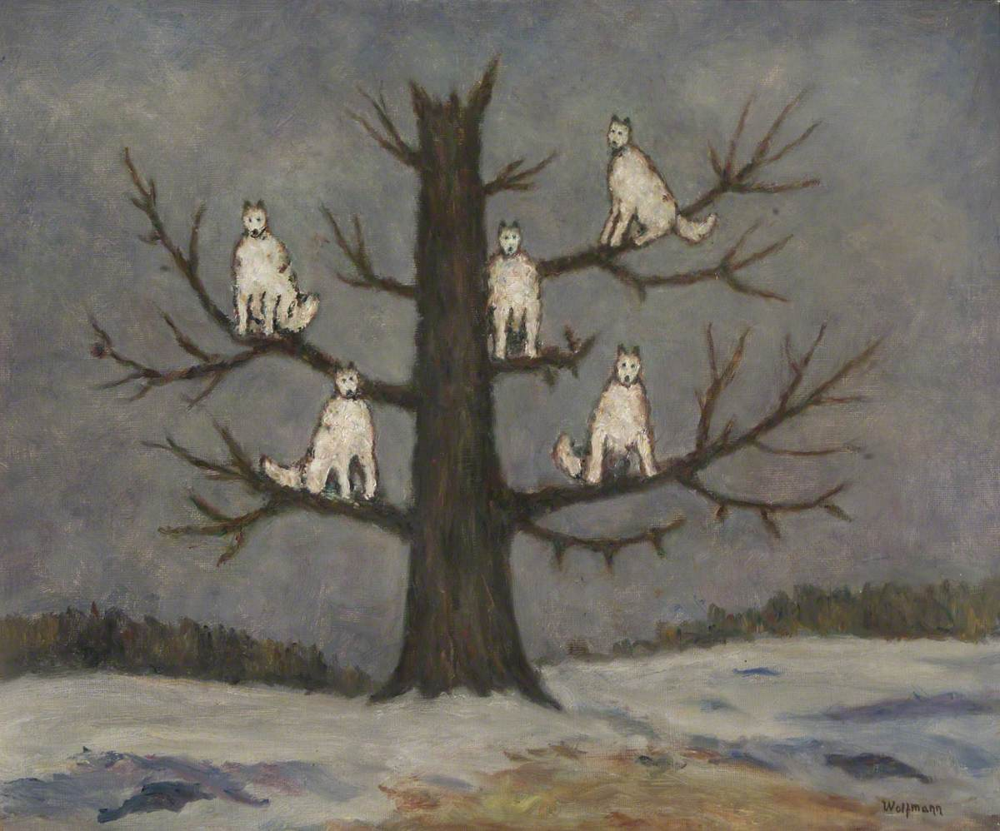

Fuji
20 aninhos, nipo-brasileiro, nordestino
Minha alma é feita de arte, minha carne veio da terra e minha voz da mãe natureza. Somos todos um com a terra e com o céu.
Prazer! Me chamo Fuji, sou autista e TDAH, e algumas letrinhas do LGBTQIAPN+. Estou cursando graduação em Pedagogia e sou técnico de informática de nível médio. Amo criar coisas, e sites são uma delas, vejo como um tipo de arte pra mim, que permite que eu me expresse de forma criativa.

 




